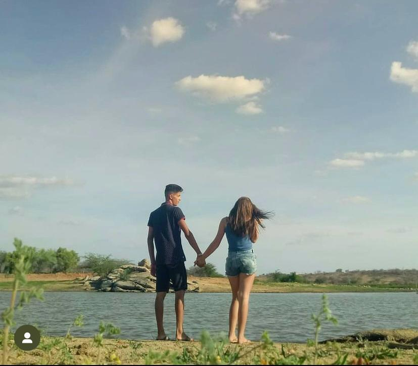
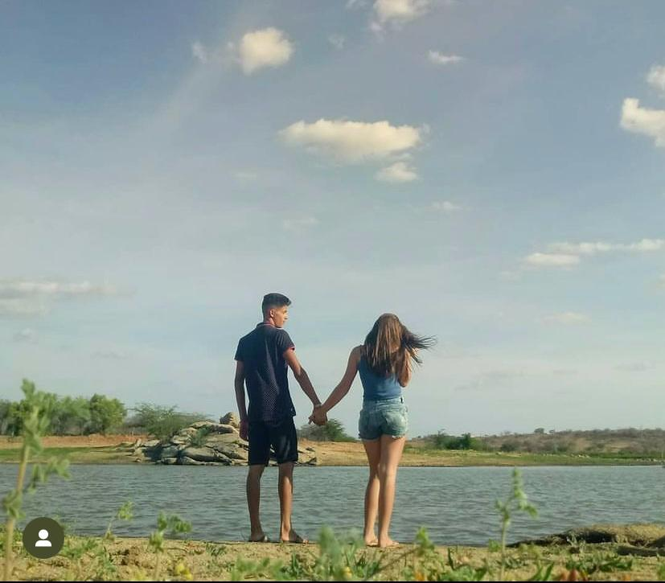
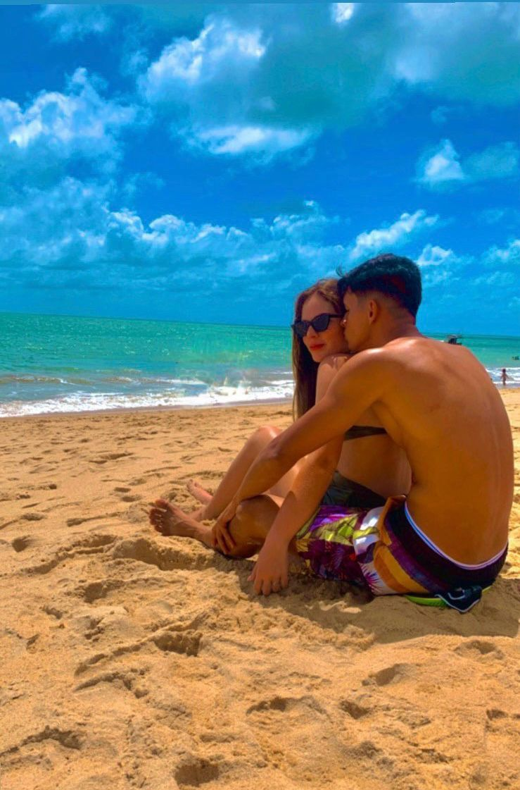
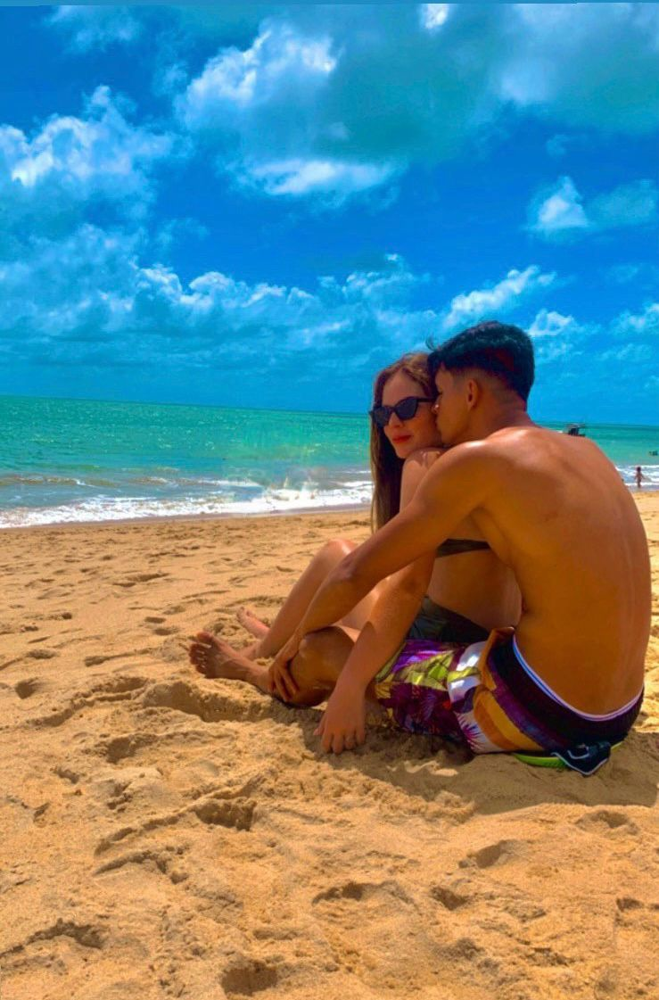

Nossa História de Amor
Carta Aberta ao Amor da Minha Vida
Meu amor,
Em 2017, sem que soubéssemos, demos o primeiro e mais significativo passo de nossas vidas. Aquele "nada" que se iniciou em 30 de junho se transformaria, aos poucos, em "o tudo" que hoje me define. Lembro-me bem de cada barreira, cada tempestade que enfrentamos juntos, mas nosso elo, abençoado por Deus, sempre nos permitiu ir além, sustentar esse sentimento e florescer. E assim, quase sem perceber, sete anos se passaram, tecendo a tapeçaria da nossa história. Em 25 de novembro de 2023, o coração me impulsionou a dar um novo e grandioso passo: transformar nossa jornada de namoro em um compromisso eterno. De namorada, você se tornou minha noiva, e a certeza de que a vida faria mais sentido ao seu lado se fez presente de forma avassaladora. Mal sabíamos que o destino nos reservava ainda mais. E o tempo, que testemunha nossa paixão, nos trouxe a 8 de julho de 2023 – o dia em que nos unimos diante de Deus, tornando-nos oficialmente um só, e você, minha namoradinha, para o resto da vida. Nossa história sempre foi guiada por Deus. Ele nos permitiu o encontro, nos revelou Seus propósitos e uniu nossos caminhos para que hoje pudéssemos celebrar cada vitória. É uma jornada que começou com um simples passo, lá atrás, e que nos trouxe a essa vida compartilhada. São nove anos de muita luta, sim, mas também de inumeráveis triunfos. Minha maior conquista não se mede em feitos grandiosos, mas no simples e profundo privilégio de te ter ao meu lado. Em cada amanhecer, em cada desafio, em cada alegria, sua presença é a minha maior fortaleza. Te amo, minha garotinha, minha eterna namorada.Nossas Lembranças Preciosas ✨


 

 


Nossa História de Amor
Era uma vez, em um dia especial...
Conte aqui toda a história de vocês, desde o começo até o presente. Use parágrafos, talvez algumas fotos pequenas intercaladas.